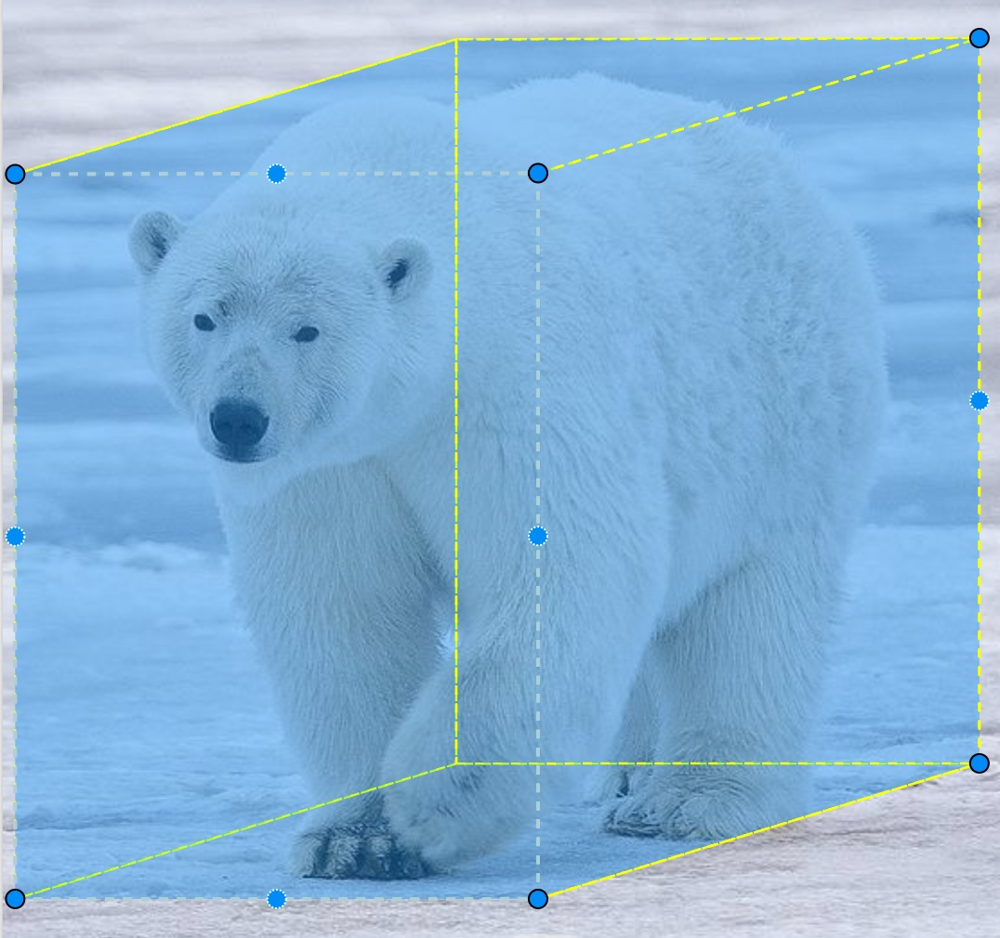

Annotation Fundamentals
- Reiterate ideas related to supervised learning, and the core idea of learning from examples
- Discuss key role of labeling/annotation in general for generating examples to learn from
- Take a quick tour of label/annotation examples across various ML applications (structured data, text, audio, image, video, etc)
- Talk about some general challenges of procuring/producing labeled data for Machine Learning
Fueling intelligence: It’s All About the Data!
The modern AI renaissance is driven by the synergistic combination of Computing advances, more & better data for training, and algorithmic innovations.
Each of these is critical, but you really can’t overstate the importance of massively upscaling training and validation data. Indeed, to a large extent, the most important recent advances in algorithms and compute have been those that allow us to efficiently use huge amounts of data. The more data available, the better the model can learn.
Remember that in Machine Learning:
- You are building a model to produce some desired output for a given input. Imagine handing a model an aerial photo that contains a water body, or a camera trap video that contains a bear, or an audio recording that captures a the song of a particular bird species. In each case, you want the model to correctly detect, recognize, and report the relevant feature.
- To achieve this, you do not build this model by instructing the computer how to detect the water body or the bear or the bird species. Instead, you assemble many (often many, many!) good examples of the phenomena of interest, and feed them to an algorithm that allows the model to adaptively learn from these examples. Now, in practice there may be rule-based guardrails, but we can talk about that separately later in the course.
Much of this course is about understanding what kinds of model structures and learning algorithms allow this seemingly magical learning to happen inside the computer, and what the end-to-end process looks like. But for now, we are going to focus on the input data. And as we embark, it is essential is that this core concept makes sense to you:
For any project involving development of an AI model, you will quite likely be starting with a generic algorithm that has limited or even zero specific knowledge of your particular application area. Unlike with “classical” modeling, the way you will adapt it to apply to your project is not by hand-tweaking parameters or choosing functional forms describing your phenomenon of interest, but rather by exposing this generalized algorithm to many relevant examples to learn from.
Bottom line, much like vehicles without fuel, even the best training algorithms in the world will just sit and gather dust if they don’t have sufficient data to learn from!
Ultimately, although you will need to have an understanding of algorithmic and models, and learn how to operationalize them on compute platforms, your success in applying AI (especially if you are training and/or fine-tuning models, not simply applying pre-trained models) will depend on your ability to implement a robust and effective data pipeline, from data collection methods to data annotation to data curation.
In this module, we focus on data annotation.
What is annotation?
Data annotation is the process of labeling or marking up data with information that is not already explicit in the data itself.
In general, we do this to provide important and relevant context or meaning to the data. As humans, especially in knowledge work, we do this all the time for the purpose of sharing information with others.
In the context of Machine Learning and AI, our objective is to teach a model how to create accurate and useful annotations itself when it encounters new, unannotated data in the future. In order to do this, we need to provide the model with annotated examples that it can train on.
To put it a different way, annotation is the process of taking some data just like the kind of data you will eventually feed into the model, and attaching to it the correct answer to whatever question you will be asking the model about that data.
Simply put, annotation refers to labeling data with information that a model needs to learn, and is not already inherently present in the data.
The term “annotation” is synonymous with “labeling”
Examples
- Label (aka Target) column: Species
When working with tabular data, we don’t usually talk about “annotating” the data. Nevertheless, the concept of labeling for supervised learning tasks (such as classification and regression) still applies, and indeed it’s common practice to refer to the data used for classification and regression model training as “labeled data”. Labeled tabular data contains a column designated as the target for learning, i.e. the column containing the value that a model learns to predict. Depending on the context (and background of the writer/speaker), you might also hear this referred to as the label, outcome variable, dependent variable, or even just y variable. If this is not already inherently present in the dataset, it must be added by an annotator before proceeding with modeling.
- Sentiment: Positive
- Parts of speech: most::adv, beautiful::adj
- Named entity: Alaska
- Voice recognition
- Speech to text
- … our focus today and this week! See details below.

Like image annotation, but with many frames! The focus is often on tracking movement of objects, detecting change, and recognizing activities.
Why is annotation so important?
We’ve already talked about the critical role of data overall in enabling supervised learning, and the role of annotation in explicitly adding or revealing the information in the data.
More specifically, the annotated data will be used at training time, when a specific learning algorithm will use the information in your annotated data to update internal parameters to yield a specific parameterized (aka “trained”) version of the model that can do a sufficiently good job at getting the right answer when exposed to new data that it hasn’t seen before, and doesn’t have labels.
The overall volume and quality of the annotations will have a huge impact on the following characteristics of a model trained on those data:
- Accuracy
- Precision
- Generalizability
Obviously there is a bit of tension here! The point of training the model is do something for you. But in order for the AI to be able to do this, you have to first teach it how, which means doing the very thing that you want it to do.
Think of it like hiring a large team of interns. Yes, it takes extra time up front to get them trained up. But once you do that, you’re able to scale up operations far beyond what you could do on your own.
This raises a few questions that we’ll touch on as we proceed through the course:
- Is there a model out there that already knows at least something about what I’m trying to do, so I’m not training it from scratch? Maybe yes! This is a benefit that foundation models (and more generally, transfer learning) offer. To build on the human intern analogy, if you can hire undergrad researchers studying in a field relevant to the task, you’re likely to move much faster than if you hired a 1st grader!
- How much annotated data do I need? Unfortunately, there is no simple answer. It depends on complexity of task, the clarity of the information, etc. So as we’ll discuss, best practice is to proceed iteratively.
Annotation challenges
By now it should be clear that your goal in the data annotation phase is to quickly and correctly annotate a large enough corpus of inputs that collectively provide an adequate representation of information you want the model to learn.
Here are some of the key challenges to this activity:
Simply put, annotating large datasets can be time-consuming!
This is especially the case for more complex annotation tasks. Identifying a penguin standing on a rock is one thing, but comprehensively identifying and label all land cover types present in a satellite image is much more time-consuming. Multiply this task by hundreds or thousands, and you’ve quite a scaling challenge!
Costs become important in conjunction with the scalability challenge.
You may find you need to pay for:
- Annotators’ time, whether they are directly employed or used via a service
- Annotation software or services, if you go with a commercial tool vendor
- Data storage, if you are leveraging your own hardware and/or cloud providers like AWS to store large amounts of data
- CPU/GPU cycles, if you are leveraging your own hardware or cloud services to run annotation software, especially if you are using AI-assisted annotation capabilities
Annotation is not always straightforward and easy, but as we’ve discussed, effective model training depends on producing sufficiently high quality annotations of sufficiently high quality training data.
Some factors to consider:
- Source data quality. Is the information signal clear in the data? And does the input dataset include a sufficiently diverse set of examples that are representive of what the model will encountered when deployed?
- Annotation consistency. Do the annotations capture information in the same way across images? This becomes an even bigger factor when multiple annotators are involved. Clear annotation guidelines and tracking various consistency metrics can help here.
- Annotation quality. Are the annotations accurate, precise, and complete? Have annotators introduced bias?
In the end, you will likely need to strike balance between speed and quality. Determining the right goalposts for “good enough” will require experimentation and iterative model training/testing.
In some applications, there is no clear correct answer! In that case, especially without clear guidelines and training, different annotators can interpret data differently. This can leading to inconsistent labels, which in turn will negatively impact model training and lead to degraded model performance.
On a practical front, effectively managing a large-scale annotation activity also requires managing and organizing all associated annotation artifacts, including both the input data and the generated annotations.
If you are performing annotation across a team of people, you also need to likely need to keep track of multiple annotations per data object (performed across multiple annotators), metadata associated with those annotations (e.g., how long each annotator took to complete the task), and various metrics for monitoring annotation and annotator performance over time.
This is especially important if you use a cloud-based tool for annotation.
Ask yourself: What is their data privacy and security policy, and is it sufficient to meet your needs?
Managing bias and ethics is not an annotation-specific problem, and we’ll discuss this later in the cousre. However, bear in mind that annotation can be a major factor, because it is a step in the modeling process when some specific human knowledge (i.e., what the annotators know) is attached to the input data, and will very directly exposed to the model during training. This creates an opportunity for injecting bias, exposing sensitive or private information, among other things.
Labeling of satellite imagery brings its own specific challenges. Consider:
- Scenes are often highly complex and rich in detail
- Geographic distortion: Angle of sensor
- Atmospheric distortion: Haze, fog, clouds
- Variability over time:
- What time of day? Angle of the sun affects visible characteristics
- What time of year? Many features change seasonally (e.g. deciduous forest, grasslands in seasonally arid environments, snow cover, etc)
- Features change! Forests are cut, etc. Be mindful of the difference between labeling an image and labeling a patch of the earth’s surface.
- It’s often desirable to maintain the correspondence between pixels and their geospatial location, for cross-reference with maps and/or other imagery
Annotation best practices
This list could certainly be longer, but if you remember and apply these practices, you’ll start off on a good foot.
Create and maintain clear labeling instructions.
- Work with annotators to make sure they understand the domain, use cases, and overall purpose of the project.
- Provide specific guidance about what to do in ambiguous or difficult cases, in order to help standardize annotations.
- Consider having new annotators apply annotations on a set of sample inputs, assess those annotations, and provide clear feedback with reference to what they could or should do better.
To ensure sufficient quality, plan on doing regular checks, running cross-validations, and having feedback loops.
First, periodically conduct manual annotation reviews to ensure compliance with instructions. This might include having a recognized expert on the team randomly selecting a subset of annotated images to assess.
Second, identify and calculate quality metrics on an ongoing basis, targeting each of the following:
Consensus. To measure the degree to which different annotators on the team are providing similar annotations, have multiple annotors annotate some of the same images, and calculate a consensus measure like Inter-annotator agreement (IAA). Several flavors of this metric exist, such as Cohen’s kappa (to compare 2 labelers) and Fleiss’ kappa (to compare >2 labelers).
Accuracy. In cases where there’s a known “correct” answer, either for all images or some subset thereof, calculate annotation performance metrics. Here are a couple of examples: - For bounding boxes, calculate a metric like Intersection over union (IoU): Take the area of overlap between the ground truth box and the annotated box, and divide by total area of the (unioned) boxes. - For detected objects overall, calculate standard metrics like precision (proportion of labeled objects that are correctly labeled) and recall (proportion of all objects that were correctly labeled)
Completeness. Keep track of annotation completeness overall. For example, when doing bounding box annotation for an object detection task, ensure that all drawn boxes are associated with a valid label.
In a nutshell:
- Start small
- Refine and improve as you go
- Scale gradually
Image Annotation Methodology
- Discuss the primary types of image annotations
- Discuss the common image-related AI/ML tasks requiring annotation
- Discuss different methods for annotating images
- Describe a high level annotation workflow
It’s important to understand and recognize the difference between image annotation types, tasks, and methods. Note that this isn’t universal or standardized terminology, but it’s pretty widespread.
In this context:
- An annotation type describes the specific format or structure of the annotation used to convey information about the data critical for supporting the task.
- An annotation task is the specific objective that the annotations are meant to support, i.e. the job you want your AI application to do. In the computer vision context, this typically means identifying or understanding something about an image, and conveying that information in some specific form.
- An annotation method refers to the process or approach used to create the annotations.
Image Annotation Types
The type of annotation you apply will depend partly on the task (see next section), as different annotation types are naturally suited for different tasks. However, the decision will also be driven in part by time, cost, and accuracy considerations.
Tags are categorical labels, words, or phrases associated with the image as a whole, without explicit linkage to any localized portion of the image.
- Label: beach
- Caption: “Embracing the serenity of the shore, where the sky meets the ocean #outdoor #beachlife #nature”
Bounding boxes are rectangles drawn around objects to localize them within an image.
Typically they are axis-aligned, meaning two sides are parallel with the image top/bottom, and two sides are parallel with the image sides, but sometimes rotation is supported.
Generalizing the bounding box concept, polygons are a series of 3 or more connected line segments (each with definable end coordinates) that form a closed shape (i.e. the end of the last segment is the beginning of the first segment), used to more precisely localize objects or areas by outlining their shape.
Segmentations involve assigning a class label to individual pixels (or collectively, to regions of individual pixels) in an image. Segmentation may be done either fully for all pixels, or partially only for pixels associated with phenomena of interest.
In practice, segmentations are produced either by drawing a polygon to circumscribe relevant pixels, or using a brush tool to select them in entire swaths at a time
Keypoints are simply points, used for denoting specific landmarks or features (e.g., skeletal points in human pose estimation).
Polylines are conceptually similar to polygons, but they do not form a closed shape. Instead, the lines are used to mark linear features such as roads, rivers, powerlines, or boundaries.
3D cuboids are bounding boxes extended to three dimensions. These are often used in LiDAR data which is represented as a 3-dimensional point cloud, but can also be used to indicate depth of field in a 2D image when the modeling task involves understanding position in three dimensions. 
Image Annotation Tasks
The task you choose will depend on the type of information you want the model to extract from the images. Here are the key types of annotation tasks in computer vision:
Image classification is the task of assigning an entire image to a category.
The classification typically refers to some singular dominant object or feature (e.g., “Polar bear”) within the image, or some defining characteristic of the image (e.g., “Grassland”), but the details depend on the specific use case motivating the modeling exercise.
Image captioning is the task of generating textual descriptions of the image. It is conceptually similar to image classification, but involves producing freeform text for each image rather than assigning the image to one of a set of pre-defined categorical classifications.
Object detection is the task of identifying one or more objects or discrete entities within an image.
Note that object detection involves two distinct sub-tasks:
- Localization: Where is the object within the image?
- Classification: What is the localized object?
Segmentation is the task of associating individual pixels with labels for purpose of enabling detailed image analysis (e.g., land-use segmentation). In some sense, you can think of it as object detection reported at the pixel level.
There are three distinct kinds of segmentation, illustrated below for the following image:
Semantic Segmentation assigns a class label to each pixel in the image, without differentiating individual instances of that class. It is best for amorphous and uncountable “stuff”. In the image below, notice the segmentation and separation of the foreground grass from the background trees from the water in the middle. Also notice that the bears are all lumped together in one segment.
Instance Segmentation separately detects and segments each object instance. It’s therefore similar to semantic segmentation, but identifies the existence, location, shape, and count of objects. It is best for distinct and countable “things”. Notice the separately identified four bears in the image below:
Panoptic Segmentation) combines semantic segmentation + instance segmentation by labeling all pixels, including differentiation of discrete and separately objects within categories. Notice the complete segmentation in the image below, including both the various background types as well as the four distinct bears.
For more on Panoptic Segmentation, check out the research publication.
Temporal annotation is the task of labeling satellite images over time to track changes in environmental features.
Image Annotation Methods
The annotation method largely boils down to whether annotations are done manually versus with some level of supporting automation. Ultimately, the choice involves project-specific determination of the cost, speed, and quality of human annotation relative to what can be achieved with available AI assistance.
With purely manual annotation, all labeling is done by human annotators.
Note that good tooling may help make this process easier and more efficient, but ultimately it is up to the human annotator to fully apply annotations to unlabeled inputs.
With semi-automated annotation, machines assist humans in generating annotations, but humans are still heavily involved in real time with labeling decisions, ranging from actually applying the annotations to refining AI-generated annotations.
This can take a few different forms. For example:
- Model-based filtering: A model is trained to recognize images with any candidate objects (as compared to empty scenes), and is used to reduce the number of images passed to the human annotator.
- Model-assisted labeling: A pre-trained model generates a candidate annotation, which the human can accept, reject, or modify in some way (e.g., size, position, category).
- Active Learning: A model is learning how to annotate the images alongside the human, and actively decides which images the human should label to accelerate model training the fastest.
At the level of automated annotation with human validation, AI models generate most annotations autonomously. Humans only review the results after the fact, typically checking accuracy metrics at a high level and perhaps inspecting a random sample of annotations, rather than reviewing every annotation.
Example: A pre-trained model processes satellite images and automatically labels roads, rivers, and forests across thousands of images. A human reviewer then inspects a small percentage of these results to confirm the annotations are accurate, fixing any errors and perhaps fine-tuning the model before the dataset is finalized.
At first glance, it might seem illogical that this scenario could exist! If you already have a model that can do the annotation, then don’t you already have a model to do the actual task you want to do?
In practice, however, there are some cases where this might be applicable:
- One scenario involves model distillation. Imagine there exists a big, expensive, and/or proprietary (i.e., hidden behind an API) model that does the task you want, and perhaps a lot more. You can use this model to annotate a dataset that you use to train a more compact or economical model that you own and control. In the end, you have effectively distilled the source model’s capability into your own model, through the annotated training data set.
- A second scenario is when you do indeed already have a trained model to perform annotations, whether your own or someone else’s, and are now using it to automatically annotate vasts amounts of data that will serve as inputs to some other machine learning or analysis pipeline. Indeed, in research settings, this is usually the end objective! When you reach this point in the process, you will effectively be doing automated annotation with human validation to ensure that the results are reasonable in aggregate.
Rare in practice! Under fully automated annotation, trained models generate annotations with no human involvement, and the quality is deemed sufficient without review.
This is typically only relevant in very specific settings, namely in environments where the image data is very highly controlled. For example, consider images that were produced in a lab setting where the composition of the images is highly controlled, or images that were generated synthetically by some known computational agent (e.g., in video games). A related approach with synthetic data involves using trained AI models to generate both the images and their corresponding annotations, in which case the annotation ground truth for each image.
Data Annotation Workflow
First step: Get a sufficiently large and diverse set of data to annotate and subsequently train on.
You may already have a set of images from your own research, e.g. from a set of camera traps or aerial flights. Or perhaps you already have a clear use case around detecting features in a particular satellite dataset, and have already procured the imagery. If so, great.
If you don’t have your own imagery – and maybe even if you do – you may want to consider augmenting it with additional images if you don’t have enough diversity or content in your own imagery. Depending on your use cases, you may want to poke around public mage datasets like ImageNet.
Time to choose your annotation tool/platform!
There are many options, and lots of factors to consider. See the next section for plenty more detail.
Before proceeding, it’s almost always useful (some sometimes essential) to apply various preprocessing tasks to your data to make it easeir to annotatate and/or eventually train on.
Here are some categories of common preprocessing tasks:
Reformatting. If relevant, you may need to convert your source images into a better file format for your task. Beyond this, it may be useful to rotate, crop, rescale, and/or reproject your images to get them into a consistent structural format.
Basic data cleaning. - For example, with satellite or aerial imagery, you may find it useful to apply pre-processing stesp such as filtering to removing noise, correcting for atmospheric conditions, correcting other distortion, adjusting brightness/contrast/color.
Feature enhancement. Other context-specific transformations may be useful for “bringing out” information for the model (and human annotators) to use, leading to faster and/or better model outcomes. For an example, list to this story about how careful transformations of Sentinel 2 imagery provided a huge boost in the detection of field boundaries as part of the UKFields project.
As we discussed earlier, before you begin in earnest, it’s critical that you develop specific guidelines for annotators to follow when doing the annotation using the selected tool.
Note: These should be written down! Some annotation platforms provide a way to document instructions within the tool, but if yours doesn’t (and probably even if it does), you should create and maintain your own written documentation
Often this will be based on a combination of prior knowledge and task familiarity. To the extent that nobody on the project has extensive experience with the task at hand, it’s often helpful to do some prototyping to inform development of the guidelines.
It’s time to annotate!
Keep in mind the following image annotation best practices. They may not always hold, but in general:
- Keeping bounding boxes and polygons “tight” to the object:
- For occluded objects, annotate as if the entire object were in view
- In general, label partial objects cut off at the edge
- Label all relevant objects in the image. Otherwise, “negative” labels will hamper model learning.
Above all else, remember, consistency is critical!
Review the annotations for quality, and if needed, refine by returning to an earlier step in the workflow.
Note that although QA is identified here as a discrete stage in the workflow, in practice quality is achieved through deliberate attention at multiple stages in the process, including:
- Initial annotator workforce training before any annotation is done
- Continuous monitoring during the annotation process
- Final post-annotation review
Finalize and output the annotated data for model training.
Typically you will need to get the data into some particular format before proceeding with model training. If your annotation tool can export in this format, you’re all set. If not, you’ll need to export in some other format and then use a conversion tool that you either find or create yourself.
From here, presumably you’ll move on to model training!
Remember this key best practice: Iterate! You will almost certain not proceed through the annotation workflow in one straight shot. Plan to do some annotations, train, test, fix annotations, figure out whether/how to do more and/or better annotations, refine your annotation approaches, etc.
{kind=link}
{kind=link}
{kind=link}
{kind=link}
{kind=link}
{kind=link}
{kind=link}
{kind=link}
{kind=link}
{kind=link}
{kind=link}
{kind=link}
{kind=link}
{kind=link}
{kind=link}
{kind=link}
{kind=link}
{kind=link}
{kind=link}
{kind=link}
{kind=link}
{kind=link}
{kind=link}
{kind=link}
{kind=link}
{kind=link}
{kind=link}
{kind=link}
{kind=link}